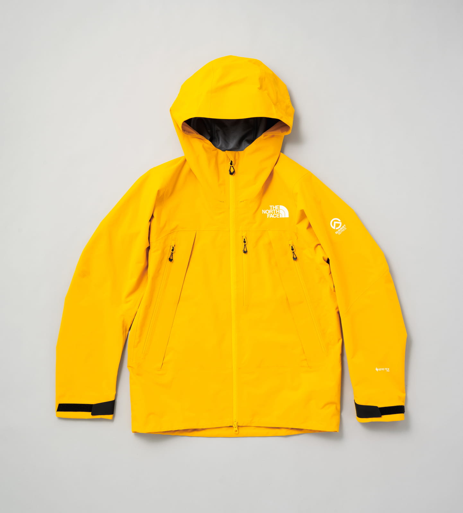
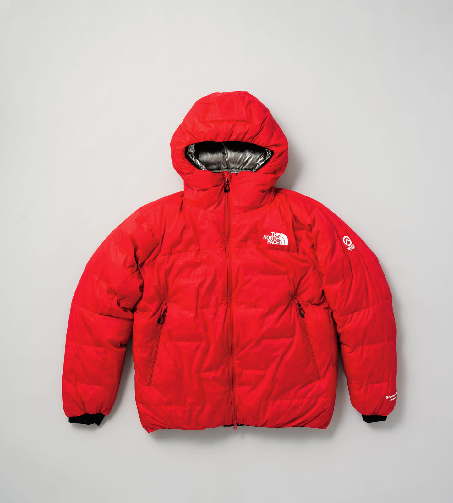
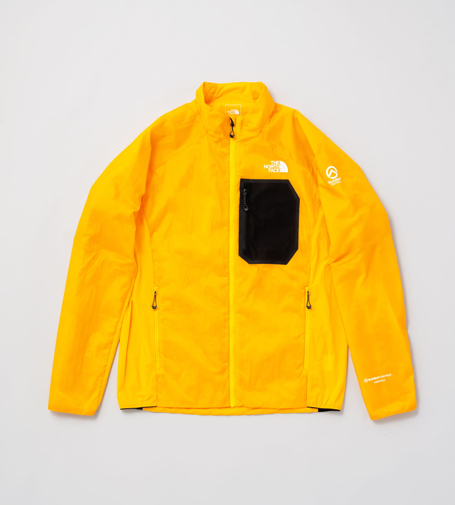
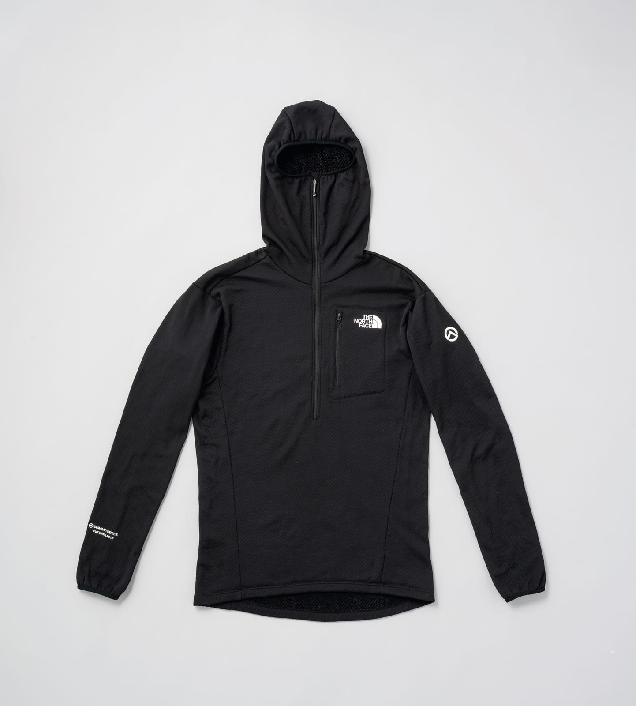
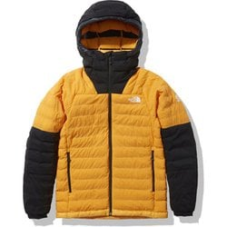
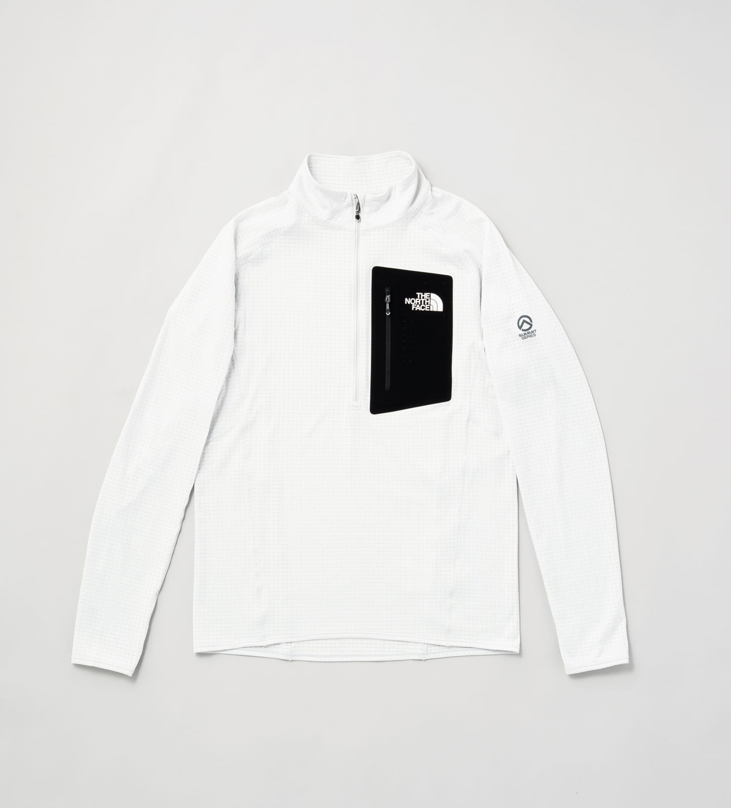
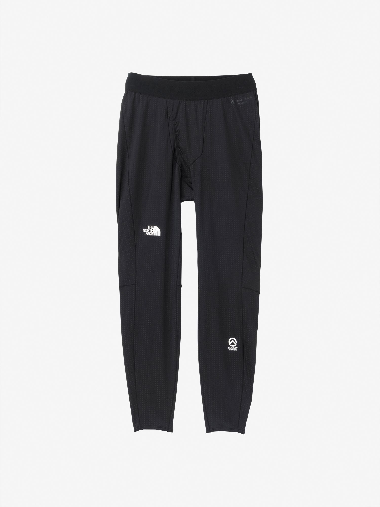
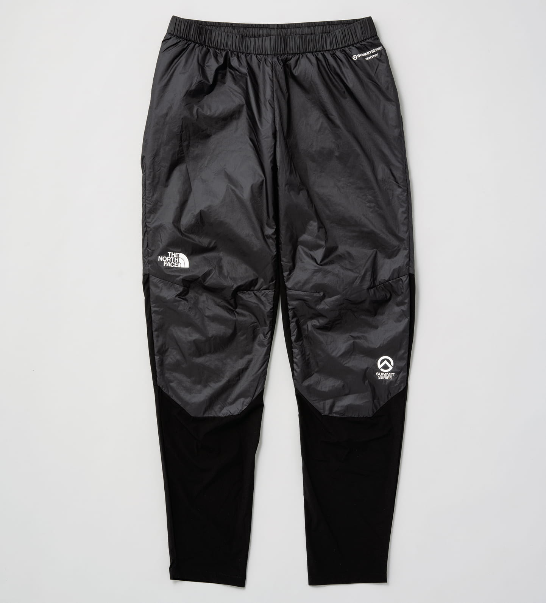
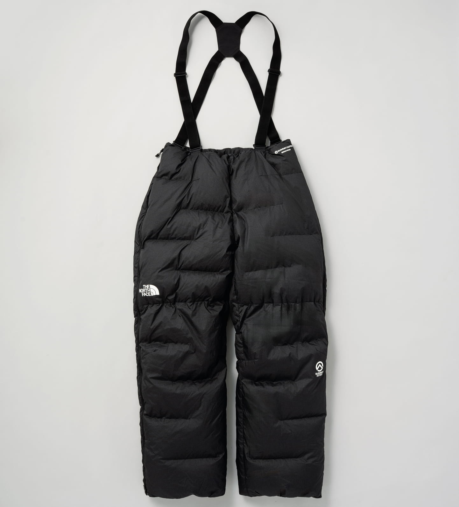
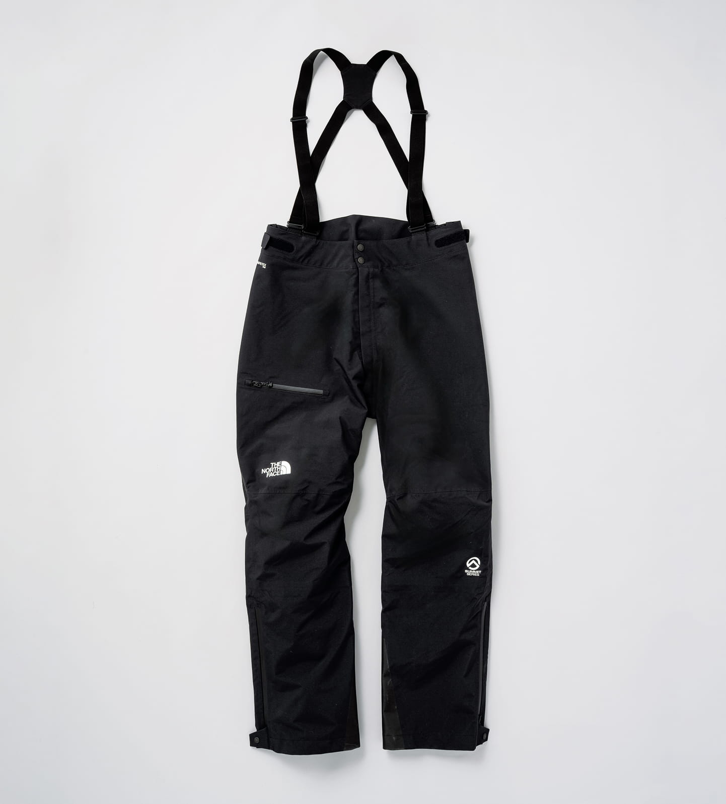

L5分层thenorthface.jp硬壳冲锋衣 · WATERPROOF SHELL
Ascent Peak Jacket
アセントピークジャケット · 顶级防水硬壳
¥72,600NP62521
- 采用最新 ePE 膜重制的 70 旦尼尔 GORE-TEX Pro，兼顾耐用与防水透气
- 头盔兼容连帽，可在攀登 / 戴盔时使用
- 双侧腋下斜开式拉链通风口，高强度行进时快速排汗散热
THE NORTH FACE · 户外装备研究报告
ATHLETE TESTED. EXPEDITION PROVEN.™
本文档基于多源检索 + 对抗式事实核验生成，列出在日本销售的全部 Summit Series 服装 / 保暖产品线， 以全球（美国官网）产品线作为参考对比，并在文末给出针对「夏季北阿尔卑斯约 3000m 帐篷露营、需防寒保暖」的分层建议。 全文严格只出现 The North Face Summit Series 产品，不含任何非巅峰系列单品或其他品牌。
研究方法：检索拆解 → 5 路并行检索 → 抓取 24 个来源 → 提取 112 条声明 → 对每条做 3 票对抗式验证（需 2/3 反驳才剔除） → 合并去重、按置信度排序并附来源。 生成日期 2026-06-07。共调用 106 个 agent。
JAPAN MARKET · thenorthface.jp
在日本官网，Summit Series（サミットシリーズ）被定位为 The North Face 的「最高峰ライン」（最高峰产品线），沿用标语 ATHLETE TESTED. EXPEDITION PROVEN.™。2025 年，原本的三条产品线 —— Steep（滑る / 滑雪）、Flight（走る / 越野跑）、Summit（登る / 攀登）—— 被 整合为统一的全新 Summit Series。以下为该系列在日本销售的服装 / 保暖分层核心产品，按分层顺序排列。
可信度图例：高置信度 · 3-0 验证
价格 / 区域敏感
日本有售
卡片右上角 L1–L5 角标 = 该单品在文末第 04 节「推荐分层」中所处的层级位置。

L5分层thenorthface.jp
L4分层thenorthface.jp
L3分层thenorthface.jp
L2分层thenorthface.jp
L4分层yodobashi.com
thenorthface.jp L1分层
goldwin.co.jp L1分层
thenorthface.jp L3分层
thenorthface.jp L4分层
thenorthface.jp L5分层GLOBAL REFERENCE · thenorthface.com / en-us
美国 / 全球官网的 Summit Series 沿用同一标语，规模更大（核验时男款约 54 件，数量随季节 / 库存浮动）， 在站内划分为 Climb（攀登）· Trail（越野）· Snow（雪上） 三个活动子系列，并设有 Mid Layers / Shell Layers / Outer Warmth Layers / Base Layers 等分层分类页（另含鞋类与配件）。 以下按分层归类列出，仅作参考对比，部分型号在日本未必有售。
所有条目标记 全球参考；价格为时价、随区域 / 季节变化。
全球巅峰系列硬壳采用两种防水技术：自研 FUTURELIGHT 与 GORE-TEX Pro。
| 产品 | 技术 / 结构 | 定位 | 时价 | 核验 |
|---|---|---|---|---|
| Pumori FUTURELIGHT JacketNF0A82UN | FUTURELIGHT 3L · 100% 回收尼龙 · 压胶密封 | 从大本营到登顶的全密封高山硬壳 | — | 3-0 |
| Papsura FUTURELIGHT JacketNF0A8A4D | FUTURELIGHT 3L · 100% 回收尼龙 · 可收纳进自身口袋 | 系列最轻硬壳 · ISPO Award 2023 | $390 | 2-1 |
| Verbier FUTURELIGHT JacketNF0A82UT | FUTURELIGHT 3L | 巅峰系列硬壳 | — | 3-0 |
| Superior FUTURELIGHT Jacket | FUTURELIGHT（耐水压约 10K） | 偏越野跑定位，非严格高山硬壳 | $360 | 注 ⚑ |
| Torre Egger FUTURELIGHT Jacket | FUTURELIGHT | 巅峰系列硬壳 | $620 | 3-0 |
| Mountain GORE-TEX Pro JacketNF0A8C9M | GORE-TEX Pro 3L · 分区 Spectra 防撕 | 系列旗舰级 GORE-TEX Pro 硬壳 | $900 | 3-0 |
含 Breithorn 羽绒家族、Casaval VENTRIX 化纤混合家族，以及极寒用 Himalayan Down Parka。
| 产品 | 填充 / 技术 | 定位 | 时价 | 核验 |
|---|---|---|---|---|
| Breithorn HoodieNF0A87ZM | 800 蓬松度 ProDown | 可作中层亦可作外层的羽绒连帽 | ≈$430 ⚑ | 3-0 |
| Breithorn Jacket | 800 蓬松度 ProDown | Breithorn 羽绒家族夹克版 | — | 3-0 |
| Breithorn LT Hybrid HoodieNF0A8C8Y | 轻量羽绒混合 | 轻量、易压缩的保暖中层 | $310 | 3-0 |
| Casaval Hybrid JacketNF0A8EFS | VENTRIX 化纤主动保温 | 登山 / 攀登用创新中层（头盔帽 · 无缝肩部） | — | 3-0 |
| Casaval Hybrid Hoodie / LT Vest | VENTRIX 化纤主动保温 | Casaval 家族连帽 / 轻量背心 | — | 3-0 |
| Himalayan Down ParkaNF0A8C95 | CLOUD DOWN 构造 · 800 ProDown · 局部 FUTURELIGHT 拼接 | 极寒高山条件的厚羽绒派克 | — | 3-0 |
全球线另有 FUTUREFLEECE 抓绒系列与 DOTKNIT 基础层（Summit Series Pro 120，EU 称 Summit Pro 120）。基础层分类页约 6 件。
| 产品 | 面料 / 克重 | 定位 | 时价 | 核验 |
|---|---|---|---|---|
| FUTUREFLEECE Full-Zip HoodieNF0A5J7S | FUTUREFLEECE 抓绒 | 全拉链抓绒中层 | — | 3-0 |
| FUTUREFLEECE LT 1/2-ZipNF0A5J8R | FUTUREFLEECE · 100 g/m² | 轻量半拉链抓绒 | — | 3-0 |
| FUTUREFLEECE PantsNF0A7WYA | FUTUREFLEECE · 130 g/m² | 抓绒保暖裤 | — | 3-0 |
| Pro 120 CrewNF0A87ZT | DOTKNIT · ≈120 g/m² · FlashDry · 拇指孔 | 冷天 / 高输出轻量基础层（上衣） | $100 | 3-0 |
| Pro 120 TightsNF0A84PQ | DOTKNIT · 低厚度接缝 | 基础层（下身） | $110 | 3-0 |
| High Trail Short-SleeveNF0A88XC | FLASHDRY-PRO | 偏越野跑短袖，非严格基础层 | — | 注 ⚑ |
Superior FUTURELIGHT 与 High Trail SS 在官网更偏向越野跑定位（前者耐水压约 10K，后者为跑步短袖），并非传统意义的高山硬壳 / 基础层；列于此处仅为产品线完整性，高山场景请优先考虑上方明确的高山款。
MATERIALS & TECHNOLOGY
读懂上面产品规格所需的核心技术名词，均出自巅峰系列产品的官方 / 验证描述。
GORE 最高耐久级别的防水透气层压。日本 Ascent Peak Jacket 采用 70 旦尼尔 + 最新 ePE 膜；美国 Mountain 款为 GORE-TEX Pro 3L + 分区 Spectra 防撕。
The North Face 自研的防水透气膜技术，多为 3L 结构、100% 回收尼龙面布 + DWR。用于美国线 Pumori / Papsura / Verbier / Torre Egger 等硬壳。
自研化纤保温棉，在关键部位开有切口；静止时闭合保暖，运动发热时张开排出汗蒸气。用于 Ascent Peak HYB VENTRIX 与 Casaval 家族。
自研抓绒：带 8 个突起的异型截面中空回收聚酯纱线，约为普通聚酯一半重量，兼顾保暖与透气。
ProDown 为 RDS 认证的拒水处理羽绒（常见 800 蓬松度，90/10）。CLOUD DOWN 为其羽绒充绒构造，用于 Cloud Down Hoodie 与 Himalayan Down Parka。
基础层导湿面料：双面针织 + 工程化透气孔、FlashDry 速干，约 120 g/m²，用于 Pro 120 系列，主打冷天高输出。
超高强度防撕格纹纤维，用作面布或分区加固，如 Cloud Down Hoodie 的面料与 Mountain GORE-TEX Pro 的分区加固。
在里衬镀钛，反射人体辐射热以提升保暖效率，用于顶级的 Ascent Peak Cloud Down Hoodie。
RECOMMENDATION · 北阿尔卑斯 3000m · 夏季帐篷露营
下面是完全由巅峰系列产品搭建的一套分层方案，针对夏季在日本北阿尔卑斯约 3000m 帐篷露营的防寒需求。 按你的选择，仅覆盖服装与保暖分层（基础层 / 抓绒 / 主动保温 / 羽绒 / 硬壳 / 配件），不含睡袋、帐篷、背包等装备。
北阿尔卑斯 3000m 一带，夏季白天行进、有太阳时可达约 10–20°C；但清晨与夜间营地气温常逼近 0°C，加上山脊大风、浓雾与午后雷雨，风寒与潮湿才是真正的威胁。
帐篷露营意味着没有山小屋的暖意 —— 营地与破晓时段需要扎实的静态保暖（羽绒），行进时则需要能排汗的主动保温与防风防水外层。
贴身排汗的高领拉链基础层；双层结构、贴肤面拒水导湿，是分层的第一层。日本 Summit Series 实有基础层（替代此前的「未明确」占位）。
透气、轻量的抓绒，作为行进中的主力保暖层；爬升出汗时不易闷热，停下时也能立刻提供基础暖度。
休息、风大山脊或清晨刚出发时套上：VENTRIX 切口在运动发热时排汗、静止时保暖，是「边走边穿」的理想保温层。
① L3 50/50 Down Hoodie · 800 ProDown · ¥52,800 —— 更轻、更透气的「活动型羽绒」，夏季 3000m 多数情况下足够，且兼具行进与营地两用，性价比与通用性更佳。
② Ascent Peak Cloud Down Hoodie · 900 蓬松度拒水羽绒 + 钛镀膜里衬 · ¥110,000 —— 系列最暖。若你特别怕冷、或预计夜间异常湿冷，选它以换取最大营地暖度。
应对山脊大风、降雨与浓雾的最外层。腋下斜开通风口便于行进时调节，头盔兼容帽适配高山地形。
全球 Summit Series 设有配件分类，但本次研究未逐一核验具体的保暖配件型号（手套 / 毛帽 / 颈套）。请在官网巅峰系列配件分类下确认当季可用型号 —— 营地与破晓的头部、颈部、双手保暖对帐篷露营尤为重要。
CAVEATS · OPEN QUESTIONS
以下两条说法在对抗式核验中被否决，本文档已避免将其作为事实陈述，特此标明：
NL22622 链至 Goldwin 官方直达商品页（实测在售）；NP62521(硬壳) 与 ND52022(50/50) 链至 Yodobashi 商品页（有详细介绍，可能缺货）；ND92520(羽绒) 与 NY82520(VENTRIX) 未找到零售商单品页，故链至官方 Summit Series 2025 特辑页。截至 2026-06 为 FW2025/FW2026 换季期，Goldwin 多数单品页已下架；零售渠道抓绒款货号或为 NL72322。购买前值得进一步向官网 / 门店确认的开放问题：
日本是否有与全球 Pro 120 / DOTKNIT 对应的专门巅峰系列基础层？本次未在日本官网检索到对应 SKU。
日本是否售卖 FUTURELIGHT 硬壳（类似 Pumori / Papsura）作为 GORE-TEX Pro Ascent Peak 之外的更轻选择？还是日本 2025 硬壳实质只有 GORE-TEX Pro？
Ascent Peak 家族 2026 年的确切含税日元价格与现货状态（部分价格仅在产品文案中确认，且可能有季节更新）。
3000m 夏季营地，900FP Cloud Down（¥110,000，最暖）与 800FP 50/50（¥52,800，更透气）何者更优？两者无独立热阻对比。
SOURCES · 信息核验来源
以下链接仅用于信息核验与溯源，不构成对任何非巅峰系列产品或其他品牌的推荐。